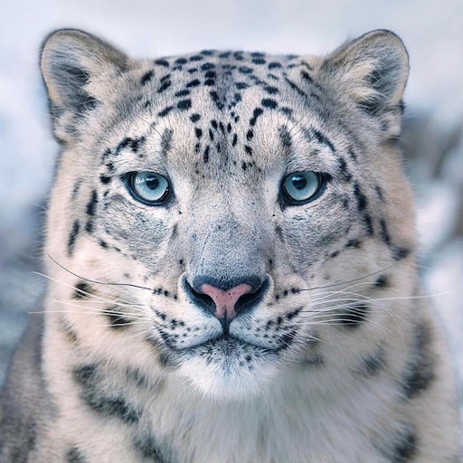

Снежный барс
Снежные барсы - это редкие и красивые кошки,которые обитают в горных районах Центральной и Южной Азии.....

Снежные барсы - это редкие и красивые кошки,которые обитают в горных районах Центральной и Южной Азии.....